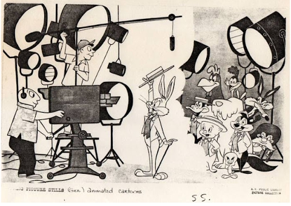
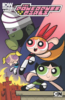
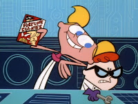

sábado, 1 de octubre de 2022
Cartoon Network
Un 1ero de octubre del año 1992 inicia sus transmisiones el primer canal de animación de 24 horas del mundo, Cartoon Network. La idea de un canal de televisión de dibujos animados proviene de nada menos que el magnate de medios Ted Turner, propietario del sistema de transmisión Turner. En agosto de 1986, tras su efímera propiedad de MGM / UA, Turner adquirió la mayor parte de la película y biblioteca de televisión de MGM de antes de mayo de 1986, formando Turner Entertainment Co.
En ese momento, además de la biblioteca de dibujos animados MGM, la biblioteca de animación de Turner también consistía en Looney Tunes y Merrie Melodies antes e 1948, los cortos de Harman y Ising y los Fleischer Studios/Famous Studios de Popeye . Turner usó su nueva biblioteca heredada para lanzar la television Turner Network, o TNT para abreviar, en 1988, que inmediatamente encontró una audiencia. Pero no fue hasta en febrero de 1992 , 4 meses después de que Turner convenciera a MCA (la empresa matriz de Universal Studios en ese momento) y Hallmark Cards para adquirir a Hanna-Barbera y la mayor parte de su biblioteca en un entonces monto récord de $ 320 En 1991, Turner anunció sus planes para usar su vasta biblioteca de animación para lanzar un canal de dibujos animados ese año.
Y así, Cartoon Network nació, con el primer programa que se emitió en el canal en su lanzamiento, fue Bugs Bunny Rabbit Rabbit. Durante los primeros años de su existencia, Cartoon Network se basó principalmente en repeticiones de dibujos animados MGM, WB y Hanna-Barbera, incluso cuando se expandió al aire de las repeticiones de programación animada producidas para TBS como 2 Stupid Dogs y Swat Kats: The Escuadrón Radical. Los espectáculos también fueron repetidos tanto en TBS como en TNT en un esfuerzo por aumentar su exposición.
Aunque The Moxy Show, que se estrenó en 1993, fue la primera serie original exclusiva de la red que empleó captura de movimiento, la primera serie Cartoon Network produciría completamente fue Space Ghost: Coast to Coast, un programa de entrevistas parodia orientada a adultos que debutó en 1994 y que fue un papel clave en el establecimiento del atractivo de Cartoon Network a audiencias más adultas, ya que en ese momento se había convertido en el 5 to canal de cable más popular en América.
Ese mismo año, se decidió que Hanna-Barbera produjera una programación original para Cartoon Network y después de formar Cartoon Network Studios, comenzaron a trabajar en What A Cartoon! (también conocidos como Premiere Mundial Toons y Cartoons), una serie de antología que consiste cortos animados originales creados por distintos animadores que fueron concebidos por Fred Seibert, el presidente de Hanna-Barbera en ese momento, como un intento de volver a los clásicos días de la Edad de Oro de la Animación dando a los animadores completamente el control creativo, con altos presupuestos y sin animación limitada.
El espectáculo se estrenó a principios de 1995 y se convirtió en responsable de dar a luz la primera programación animada original de Cartoon Network, incluyendo espectáculos tan aclamados por la crítica como el laboratorio de Dexter, The Powerpuff Girls, Johnny Bravo, Cow and Chicken y Courage the Cowardly Dog.
 Como el laboratorio de Dexter fue el corto más popular del grupo, según una votación celebrada por la CN en 1995, fue seleccionado para ser el primero de tener una serie, que se estrenó en abril de 1996. EL canal ha ido variando poco a poco sus parrilla y trayendo programas para las nuevas generaciones, como Adventure Time, Regular Show, Steven Universe, We Bare Bears y otros que siguen legando a nuevas y viejas audiencias. Un feliz aniversario CN!